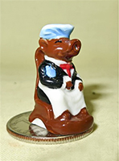
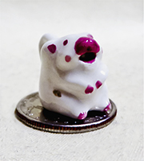
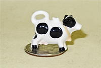

Where does one draw the line for miniatures? Well, doll-house size, 1/12 scale (or smaller) creamers
clearly qualify. I’ve also chosen to place some slightly larger ones in this category, mainly based on
the fact that many of them seem too tiny to effectively serve as real creamers, at least for more than a
skimpy serving for a very small person. And, this is a mixture of creamers and teapots.
As a reminder, click on any thumbnail for a larger picture.


Doll House (1/12 scale) : I have found four types of these lovely little dollhouse creamers, based on the material they are made from. The first type is china or porcelain or some other version of ceramic, like this ‘tea set’ and the very similar but slightly larger teapot. These can be and often are made in fairly large quantities. The
lids of the little teapots here are the tops of their heads and horns. I have seen this set on ebay but I bought mine from the
very delightful Black Butterfly Shop on Royal Street in New Orleans in 2000. This shop is run by
Myra Landry and her brother Norbert, the 3rd generation of their family to operate it. It survived
Katrina, but according to a Washington Post article from their web page, business hasn’t been the
same since. The separate cow came from the UK by eBay. I don’t know the maker of either of these.
|


Here is a very special and quite old dollhouse-size (albeit somewhat larger than 1/12 scale) Staffordshire style creamer. I know it's not unique because I have two (forgot I had the first when the second came up). The
seller stated that she discovered this one hidden behind the curtains of the Nantucket (MA) Fletcher
house. She notes that there is mention in the museum documentation that it is from Holland and from
the 1880s, possibly earlier. I do believe that the Holland attribution is correct, from the sketch
of what looks very much like a Dutch girl on the base. She goes on to state that “This cow creamer
was a part of a beautiful Dollhouse created by Cara Van Campen Fletcher, born in 1902. This
magnificent house is a copy of the original Fletcher House still standing in Nantucket and built by
the Fletcher Family in the 1830s. The estate, farm and caretaker’s cottage was gifted to the Flint
Museum of Arts in Michigan in 1957 and Deaccessioned in 2010. The original house measures 58” in
length, is three stories tall, ten rooms and a widow’s walk on the roof. The main house was
originally built in the 1920’s, Mrs. Van Campen-Fletcher had it shipped to her in 1950 from Nantucket
and began the painstaking work of completing the house, farm and caretaker’s cottage”. This creamer
is one of several hundred pieces from the dollhouse.
|

Here starts an area of the page with lovely miniature cow creamers and spill vases from V&R Miniatures ( http://rachelsart.ueuo.com" ). This is the company of Vaughan (sculptor) and
Rachel (artist) Williams, who design and make a beautiful line of handcrafted
(like these creamers) and other porcelain doll house
miniatures. They’re located at Lakeside View, Bwlch-y-Garreg, Pontdolgoch, Caersws, Powys, Wales (quite
a mouthful; I've checked the vicinity on Google Earth and it's lovely countryside, fields and hedgerows). They have a great web site, and do superb workmanship. To quote from the introduction to their site, "Following traditional pottery techniques from original model to plaster mould, slip casting, firing, glaze and on-glaze firings, there are so many stages to completion! Some of the designs were inspired by English Staffordshire pottery circa 1750 to 1850. They are suitable for most dollhouses. As well as the slip cast pieces we also make many one of a kind Staffordshire miniatures. We also make a wide variety of birds, animals and teapots, and we can custom make individual pieces to order." As you can tell from the pictures, these two pairs - decorated with blue dots on the left, and delft-like patterns on the right -- vary similar but by no means identical.
|

Three more from V&R. The one on the left is decorated with what looks to me like fuzzy trees - perhaps a Chinese motif. In the middle is one I asked Rachel to make for me, a miniature version of a Jackfield cow creamer. On the right is a shapely black and white cow with what may be a bluebird on its lid (and a bunch of poster putty to hold it on sticking our - sloppy of me).
|
Each of these three V&R miniature Staffordshire cow creamers has a different base and personality. The one on the right is decorated with a Chinese blue-willow pattern, much like the larger ones shown on the Staffordshire page. I like V&R's work so much I tend to buy whatever becomes available. |
These four, also V&R Miniatures, all have milkmaids.In the left picture, the lady on the left must be doing something special to generate the smirk on her pink cow's face. By contrast, the yellow cow looks a bit worried. The matched set on the right (with the poster putty to hold on the lids showing) seemed to me best to display looking at each other. I assume one if left-uddered and the other is right-uddered.
|
|
Yet another cute little cow creamer with kneeling milkmaid by Rachel Williams of V&R Miniatures. This one was fashioned without a lid. Or maybe Rachel just forgot... |
V&R also make cow and milk maid/man spill vases. Here are three different examples. The chap with the green basket on his head and the lady on the right with the cow with a foreshortened face would fill through the top of the person, while the one on the left has the fill hole on the cow. There is a whole section of spill vases, and an explanation of their use, on the Staffordshire page |
|
Of course V&R also make Staffordshire figurines, like this cow and calf. The lady here appears to be holding a bottle of milk, but since the cow seems pretty teatless, I wonder where she got it. Perhaps she is taking on the responsibility for feeding the calf. This one certainly doesn't meet my two-hole (or even one hole) criterion, but is still a very nice piece and was too tempting to resist.
|
We finish up the V&R part of the miniature collection with the two on the left, a matched set of brown and white and black and white cow creamers without bases or lids. On the right is another matched set, quite similar in many ways to V&R's products, but in this case signed "KCR". I bought them from a stand of miniatures at a British country fair in the UK in 1997 and foolishly didn't get the name of the maker.
|
These look like V&R's work, and may indeed be, but I didn't get them from them but rather from other Ebay sellers. The two with blue dots on the right came from a vendor in Kent while the ones on the left were acquired from from Mandy Howarth of 'In the Magpie’s Nest' of Cumbria, UK. She sells a nice range of low priced doll-house items at magpies-miniatures.net (which when I last checked indicated it would go out of business at the end of 2019).
|
| |
This brown creamer on the quarter came (via ebay) from Little Obsessions in Commak, NJ. This cow is signed “SM” but provides no other information. I have tried to find these folks on the web and came away with lots of sites about 'obsessions', some big, some little, and some rather unmentionable, but none in Commack NJ. |
Here are two very similar porcelain cow creamers from different artisans. The one on the left is from France,
made and signed by Valerie Anne Casson, a miniaturist for over 30 years. Her web site
(valeriecasson.com) notes that she was born in Britain but moved to Provence in 2002 and is now a
committed Francophile as well as a maker of many lovely miniatures (but only this one type of cow
creamer). The one on the right bears a sticker that says “BB”, and came from the estate of Mary
Werth, who was ‘Den Mother’ for the worldwide miniature group The Camp. I hadn’t realized that there
were as many such groups as there seem to be – but in poking around I found a site for the National
Association of Miniature Enthusiasts, and they show a map of the US where you can click on your state
and find our what clubs are there (none in Alaska!) …or you can also go to the directory at
myminiatures.com.
|
|  |
Also of French porcelain is this lady pitcher resting in a chair with her blue shawl
around her shoulders. It was sold on eBay by Karen Aird of Karen’s Dollhouse – a good source for
little things. I've also found it sold as a 'pig' miniature, and have my suspicions from the shape of the snout that may indeed be correct. Nonetheless it's on my shelf and not about to go away. |
|  |
This cute little ceramic creamer with the big red nose actually pours. I suppose
one could decide it’s supposed to be a bear or such, but it was sold as a cow and I’m
willing to accept that.
|
 |
This little milk bottle cow, very reminiscent of its larger cousins found on the
teapot page, comes from SP Miniatures. Although hard to read, it even says “Drink Milk” in
raised letters on the side.
|
|  |
Here’s a commercial version of a Holstein teapot – a bit out of place here because it's made of resin of some sort. I have no idea who
made it, but I got it from Dolly’s Gallery of Danville, VA. There are all kinds of doll house
things on Dolly's web site.
|
The little sitting cow with the daisies and golden eye came from the UK, but with
no information on provenance. The little standing creamer in the package is, as
the label says, from Dragonfly International, a “handcrafter of quality dollhouse
miniature accessories…for the past 25 years” in Roseville, CA
(www.dragonflyintl.com). It has a companion cow
butterdish.
|
 |
This one is from Karen Aird Miniatures of Basking Ridge New Jersey. I assume that it says ‘milk’ not
‘cream’ because ‘milk’ fits better.
|
|
The little teapot with spice jars
is unmarked.
|
Here is a little French teapot with a matching cup. It came in company with these 5 other animal
teapot and cup sets. These were sold as French Porcelain feves, and although I have enjoyed many a
King Cake (Gateau de Roi, made for Epiphany on 6 January) I hadn’t caught on to the degree to which
these ‘feves’ or ‘beans’ that are put in the cake (whoever gets it in his piece is ‘king for a day’ …
and in some circles is responsible for baking the next year’s cake) – a long-standing French and
Cajun tradition – had become very popular collector’s items. Indeed, I had no ides how many varieties
there were until I visited www.epiphany-figures.com,
which takes you to “Faboland – Jean-Marie Collections”. Once there I naturally went to the ‘Themes’
section, and lo and behold there is a whole section on ‘vaches’ including this little “le The de
vaches” set.
|

Two more porcelain ‘feves’, each about ¾”
tall. These are indeed cow creamers since there is actually a little fake hole in the
middle of each mouth, even if they are a bit fanciful. They came with plates that (like
the other animals above) will migrate the home of one of my daughter-in laws who used to
live in New Orleans and makes king cakes..
|
The second type of miniature cow creamer is plastic. I have only two of these, and one is silver colored so it's down with its real silver cousins. Here, standing on the nose of George, is a plastic one I was delighted to find - a miniature Moo Cow creamer, measureing a half inch tall an a quarter inch wide. To learn about Moo Cow Creamers, go to the Advertising and Souvenir page where there is quite a bit of information about them...but basically, they were very popular in the 1970s, and millions were sold. This little beauty was crafted by Anna Rupp who lives in Michigan and trades as Woodland Trail Whimsy. Best I can tell she doesn't havce a separate web site, but you can find her cute and tiny creations on Etsy. |
The third type of doll-house items are the ‘one-of a kind’ versions hand-fashioned of
polymer clay. These three black and white examples come from multi-media artist Anne Galvin, who runs Elf-World
Creations out of a studio-workshop in Sussex, England. These little guys all seem to be quite
popular and draw nice prices on eBay. Others in my collection include ...
|
|
...these sweet teapots by Loredona Tonetti (Lory’s OOAK) of Italy,
|
...these two doll house 1/12 scale tea sets made by Ellie Baggs of Tottenham,
London, and
|
|
... two on the left by Catherine Rohal (Keepsakes) of Ohio, and a pig-spouted Holstein teapot with a
lamb handle by Ann Galvin.
|
|
This little polymer clay lidded holstein was made by the same Ellie Baggs who did the cute tea
sets on trays above.
|
Here are two interpretations of the shaggy Scottish Highland cow. On the left is a teapot by Ann Galvin of Elf World Creations. On the right, this small Scottish Highland cow wearing a scarf (it's cold in the highlands) came from Marie Palmer of Connie Rose Designs in
Derbyshire. I think the little bubble case was meant to protect it during shipping, but the cow
looked sort of happy in there so I left it as it came.
|
|
This cow-pig-chicken stack ‘teapot’ was made and sold by Jeanne Brown of Rotherham, South
Yorkshire. These animals all look a bit frightened – not sure what might have spooked them.
|
 |
Not a cow teapot precisely, but so cute I couldn’t resist – a delightful miniature interpretation of
the cow jumping over the moon, fashioned by Sharon Howard of Illinois.
|
And here is the tiniest one of all, a cow pitcher from Pamela Scott of FL, just ¼
inch each way. We need to keep it glued down, or it would get blown away.
|
There is actually a fourth version of doll-house cow creamers, namely sterling silver ones - although there don't seem to be too many of these. Here, before moving from the doll house scale (these actually seem smaller than 1/12) to slightly larger but still small cow creamers, are the two in my collection. If you’ve already looked at the silver cow page you will have seen and learned
a bit about them – the little 1/12 Schuppe model (doesn't look like Schuppe to me but that's what the maker calls it) that’s available from the catalog of Peter Acquisto
of Albuquerque, NM, and a similarly scaled cow creamer (actually a bull it seems from the underpinnings) attributed to Eugene
Kupjack, which spent some time in a Tynietoy
mansion.
|
 |
This cute little 1/12 scale cow creamer on a base is also ‘silver’, but only in color since it’s
made of plastic. I think it would be much more appropriate for a child’s play dollhouse
that the sterling silver ones above.
|
 |
Let's start the 'slightly larger' miniature cow creamers with these two. Like their bigger
cousins, miniatures are often used as souvenirs. Here are ones for
Jersey and Guernsey. These are much too small to be very useful, but as
opposed to most of the the 1/12 scale doll house ones they do have two real holes.
|
 |
In this shot of five with a similar shape, the reddish and white ones are from Germany and the
largest, on the far right, from Japan. The other two are unmarked. I have heard these referred to as
‘salesmen’s samples’ as well as doll house toys, and as with many of my creamers, I have paid a wide
range of prices for them (usually the most for my first example). eBay has been somewhat helpful in
determining what is and isn’t REALLY rare (although usually after the fact), in spite of how folks
peddle things. In this case, it's the tiniest that I believe to be most scarce.
|
 |
On the left is a slightly larger version of the creamers above – about 3” tall. It's similar in
concept but obviously from a very different mold. It bears the circular “Made in Czecho –Slovakia”
stamp. It is keeping company with a nice porcelain souvenir of Jersey.
|
 |
These two little porcelain cows with wide open mouths standing in grass up to their bellies are
impressed with “21945 Germany" on the bottom.
|
 |
On the left is a little pitcher I borrowed from a china teaset. The whole set is on the Teaset
page. On the right is a doll house version of Paul Cardew's cow teapot. There are many examples of
his delightful work on the Teapots page.
|
Now we’re getting to creamers that are a bit larger yet. Still only a couple inches
tall, but not at all designed for doll houses, best I can tell. Rather, just small creamers for those
that like such things, including some souvenirs for the tourists with tiny suitcases (and common
sense).<
|
 |
Let's start this area with the only cow creamer I have that is designed to be an ornament - it has
a little string loop so you can hang it on the Christmas (or whatever) tree.
|
 |
This robust little guy is from Deruta, Italy. The web (www.derutaitaly.com
) informs us that “Deruta is a small town placed in the middle of Umbria, famous all over the world
for its classical and modern ceramics. Its artistic tradition dates back to Etruscan period, but it
is in the Renaissance that Deruta reached its artistic perfection.” The town seems to be most famous
for its majolica ware. This interesting web site contains quite a bit about the history of the area,
but alas says nothing about cow creamers. Maybe some plate-maker just had a bit of clay left over.
|
On the left, the lovely little dark brown and white cow on a stand that looks like a rock came (via eBay) from the UK. It doesn’t have any markings, but the quality of the pottery and the shape of the head and ears makes me think that it might be German. The one on the right is also from the UK, again with no markings for maker or locale.
|
Both of these are unmarked, but I strongly suspect they are from the UK or Europe. The little
sitting green cow is fairly heavy ceramic, and its very different neighbor here is a porcelain calf
decorated with violets.
|
These are all American. The one in the middle in the left picture bears a silver sticker for "Rio
Hondo Potteries, El Monte Calif, Made in California". Rio Hondo made figurines from 1939 to the
mid-1950s, according to the list of California Potteries in Wikipedia. This was apparently a popular
mold, used by a number of other potteries - including perchance Suwannee. They can quite often be
found for offer on ebay. The cute but pensive little cow on the right is unmarked but from the nature
of the ceramic and the expression, it must almost certainly be from the US. I have never seem another
like it.
|
|
These three little bulls are Torito’s de Pucara – little bulls of Pucara, from Peru. This form dates
from the days of the Spanish colonization, since there were no bulls in Peru until the Spanish
brought them. In their normal size they serve as ritual elements for cattle branding ceremonies, as
prosperity and good luck charms found on the roofs of many Peruvian homes, and of course as souvenirs. You will
find some bigger ones and more information about them on both the Places and the Rhytons pages. I was delighted to find the
miniature simple clay versions on eBay. The little black one that came from Novica is by Maribel Posso Olivares who with a friend now heads a workshop with about 12 artisans, creating ‘alasitas’ which are tiny items reflecting wishes. These three little toritos are all shown in the company of their larger colleagues on the Rhytons page.
|
 |
I think this form of cow creamer is extremely cute. I initially bought one that was a Swiss
souvenir, and it turns out that it had cousins. The larger of these two (no spots) has Japanese
markings on the base.
|
Three very different ones here - on the left, the long necked cute creamer with the big eyelashes is artisan-made, bought in an antique shop in Salisbury MD. It bears a flower like symbol and "B 'by P" The 'latte' creamer has a mark that says from“ZOPPOLA, PN, M.G.R.”, with something around the outside and “Made in Italy”, albeit I got it at an antique and collectibles shop in Shrewsbury PA. The little patriotic one on the right is simply an inexpensive eBay purchase. There's a similar blue and white one further down the page.
|
Moving to Japan, here are five fanciful wild eyed creamers with front and back legs both fused
together side to side. They probably date to the late 1940s or early 1950s. Lots of variations on
essentially the same idea, and most likely from the same maker. One of them has a souvenir decal, now
somewhat obliterated. On the right is a somewhat less fanciful but still multi-colored Japanese
interpretation, featuring both standing and lying down cows.
|
More Japanese interpretations. Another sitting/standing pair, rather crudely fashioned, and two
squatting bulls. These bulls also come in larger sizes as shown in Modern Variations. They must have
been very popular in their day, presumably due to the story of Ferdinand the Bull, because they
proliferate on ebay.
|
On the left are a couple of Japanese miniature creamers standing in a field with pink flowers. They
are marked for “Pioneer Mdse Co, N.Y., Japan” inside a keyhole shaped emblem and are souvenirs of
Niagara Falls and Biloxi Miss. The sort of ugly one on the right, also in grass – with a
foreshortened nose and no horns – is also pretty obviously Japanese, but unmarked.
|
Small cow heads here. The yellow and green caricatures are marked Japan. The two little ones with
what looks to be 'Blue Willow' decorations aren't marked but are most likely from China. At one time I
considered using them as models for pawns and commissioning a silver cow creamer chess set. My wife
thankfully talked me out of that expensive folly.
|
| |
 |
Teapots should not be left out. There’s a gradation in size across these three, but the small one
in the center, the farmer holding the milk bottle, wouldn’t have a chance of holding a regular sized
tea bag, let alone any real tea. “Collectibles” I suppose. I do find that using a cake as a spout a rather
interesting idea.
|


{kind=link}
{kind=link}
{kind=link}
{kind=link}
{kind=link}
{kind=link}
{kind=link}
{kind=link}
{kind=link}
{kind=link}
{kind=link}
{kind=link}
{kind=link}
{kind=link}
{kind=link}
{kind=link}
{kind=link}
{kind=link}
{kind=link}
{kind=link}
{kind=link}
{kind=link}
{kind=link}
{kind=link}
{kind=link}
{kind=link}
{kind=link}
{kind=link}
{kind=link}
{kind=link}
{kind=link}